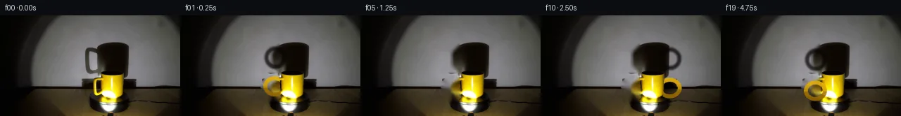

![首帧]()

Round 00
2026-11-05T03:15:28.012237+00:00像素候选变化代码 +271/−0inspection 更新
pixels 3a80a2938a365107 · code 2b337c38e87f27ad
查看本轮 generate.py 真实 diff
--- previous/generate.py
+++ current/generate.py
@@ -0,0 +1,271 @@
+#!/usr/bin/env python3
+"""Generate the 20-frame PixelWorld continuation from the supplied RGB frame.
+
+The image is treated as a small photographic plate. Later frames retain the
+plate verbatim except for the turntable, mug handle, and corresponding cast
+shadow. All geometry below was measured numerically from first_frame.png.
+"""
+
+from pathlib import Path
+import math
+
+import cv2
+import numpy as np
+from PIL import Image, ImageDraw, ImageFilter
+
+from artifact_io import save
+
+
+ROOT = Path(__file__).resolve().parent
+W, H = 256, 144
+AA = 4
+
+
+def aa_shape(draw_fn, blur=0.0):
+ """Return an antialiased L mask produced at 4x resolution."""
+ layer = Image.new("L", (W * AA, H * AA), 0)
+ draw = ImageDraw.Draw(layer)
+ draw_fn(draw, AA)
+ if blur:
+ layer = layer.filter(ImageFilter.GaussianBlur(blur * AA))
+ return np.asarray(layer.resize((W, H), Image.Resampling.LANCZOS), dtype=np.uint8)
+
+
+def ellipse_mask(box, blur=0.0):
+ return aa_shape(
+ lambda d, s: d.ellipse(tuple(int(round(v * s)) for v in box), fill=255),
+ blur,
+ )
+
+
+def ring_mask(cx, cy, rx, ry, thickness, blur=0.0):
+ def draw_ring(d, s):
+ d.ellipse(
+ (
+ int((cx - rx) * s), int((cy - ry) * s),
+ int((cx + rx) * s), int((cy + ry) * s),
+ ),
+ fill=255,
+ )
+ irx = max(0.7, rx - thickness)
+ iry = max(0.7, ry - thickness)
+ d.ellipse(
+ (
+ int((cx - irx) * s), int((cy - iry) * s),
+ int((cx + irx) * s), int((cy + iry) * s),
+ ),
+ fill=0,
+ )
+
+ return aa_shape(draw_ring, blur)
+
+
+def polygon_mask(points, blur=0.0):
+ return aa_shape(
+ lambda d, s: d.polygon([(int(x * s), int(y * s)) for x, y in points], fill=255),
+ blur,
+ )
+
+
+def composite(dst, color, mask, strength=1.0):
+ alpha = np.clip(mask.astype(np.float32) * (strength / 255.0), 0.0, 1.0)[..., None]
+ color = np.asarray(color, dtype=np.float32)
+ if color.ndim == 1:
+ color = np.broadcast_to(color, dst.shape)
+ return np.clip(dst.astype(np.float32) * (1.0 - alpha) + color * alpha, 0, 255).astype(np.uint8)
+
+
+def measured_masks():
+ # Mug body: elliptical lip plus gently tapering cylindrical body.
+ lip = ellipse_mask((140.0, 82.0, 176.5, 95.0))
+ body = polygon_mask([(141.5, 88), (175.5, 88), (172, 128),
+ (167, 137), (150, 138), (144, 132)])
+ body_mask = np.maximum(lip, body)
+
+ # Original left handle and its hollow interior must both be removed when
+ # synthesizing later orientations. Protect the photographed mug body.
+ handle_footprint = ellipse_mask((114, 86, 147, 123), blur=0.3)
… diff truncated; 184 more lines …